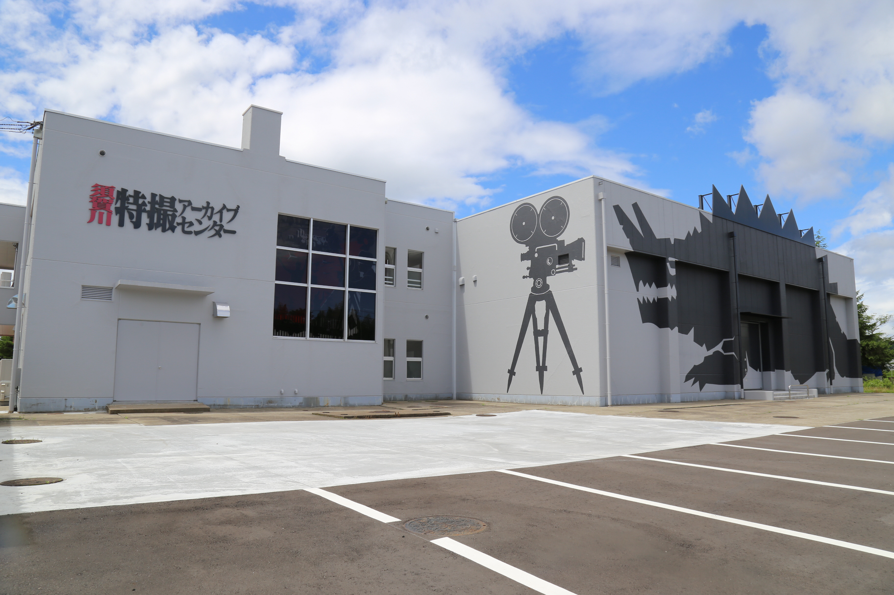
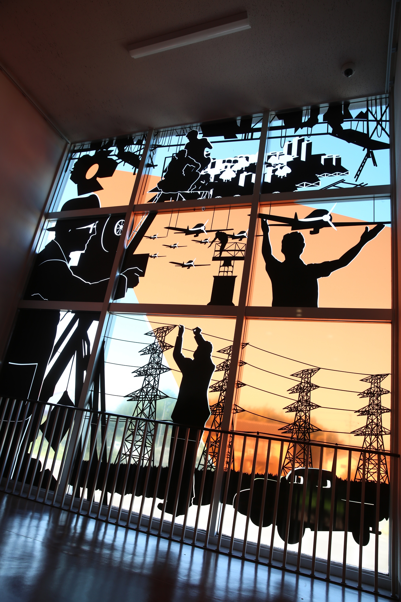
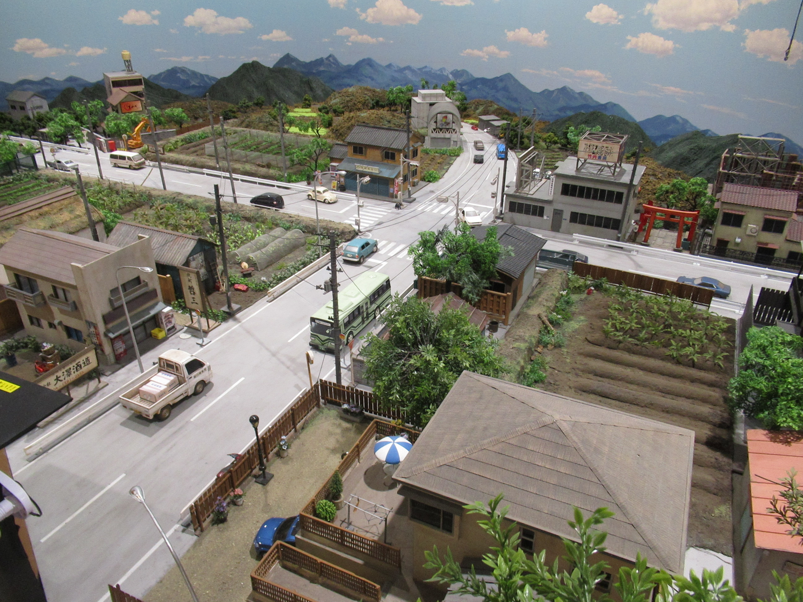
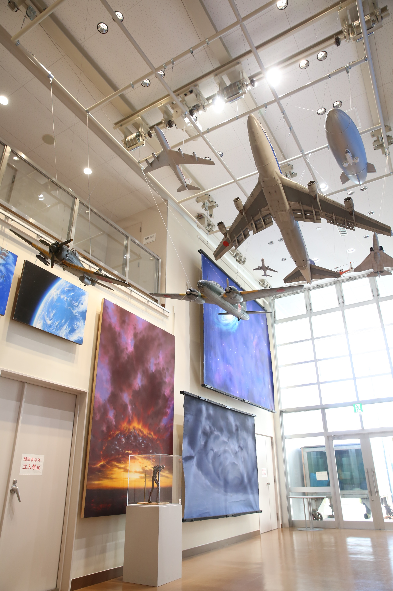

特撮文化推進の拠点施設
「須賀川特撮アーカイブセンター」は、須賀川市が取り組む特撮文化の推進における拠点施設として、 ２０２０年１１月３日（文化の日）に開館しました。 須賀川市は「特撮の神様」と称される円谷英二監督の出身地であり、円谷英二監督が礎を築いた特撮 は、多くの素晴らしい作品を生み出し続けています。一方で、特撮作品で使われたミニチュアなどの貴重 な資料は、破棄されたり散逸したりしており、当時の状況を知っている人も少なくなりつつあります。 須賀川市ではこのような現状を危惧し、認定特定非営利活動法人アニメ特撮アーカイブ機構（ATAC）と ともに特撮資料を適切な環境で保存する取り組みを開始し、恒久的な施設の整備を連携して進めてきまし た。 当センターは、特撮技術を後世に伝えていく役割を担い、特撮に関連する貴重な資料等の収集・保存・ 修復及び調査研究を行うほか、特撮文化を顕彰、推進していきます。ご来館された皆様は、撮影などで使 用された資料を見学することができます。
施設のご紹介

センター外観
外壁に大きく描かれたスカキングは、須賀川特撮アーカイブセンターのオリジナル怪獣。スカキンググッズも販売中

階段室窓面デザイン
特撮風景を模したステンドグラス風デザインが階段踊り場で来館者をお出迎え

ミニチュアセット
セットの中に入り込んで、ヒーローや怪獣になったつもりで撮影ができます

ホール
ホールでは、撮影で使用された飛行機などのミニチュアや背景画を観ることができます
施設情報
所在地
962-0832
福島県須賀川市本町８１－４
福島県須賀川市本町８１－４
電話番号
0248-72-1212
FAX番号
0248-94-2230
ホームページ
営業時間
9:00-17:00
定休日
ホームページをご確認ください